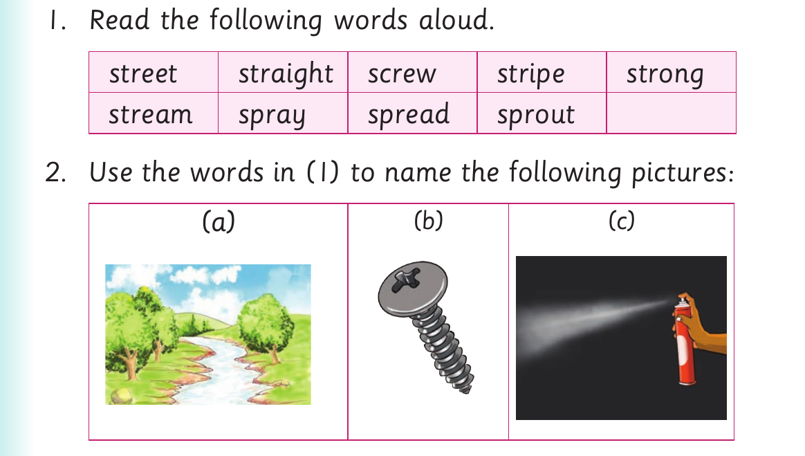

I read words with groups of consonants
I read words with groups of consonants.

Activity 1 1. Read the following words aloud. street straight screw stripe strong stream spray spread sprout 2. Use the words in (1) to name the following pictures: (a) (b) (c)
3. Pronounce the sound groups str - , scr - and spr -. 4. Read the following sentences aloud: (a) We live on the next street. (b) A zebra has stripes on its body.
(c) Healthy stew will make you strong.
(d) Draw straight lines with your ruler.
(e) We crossed the stream on our way home.